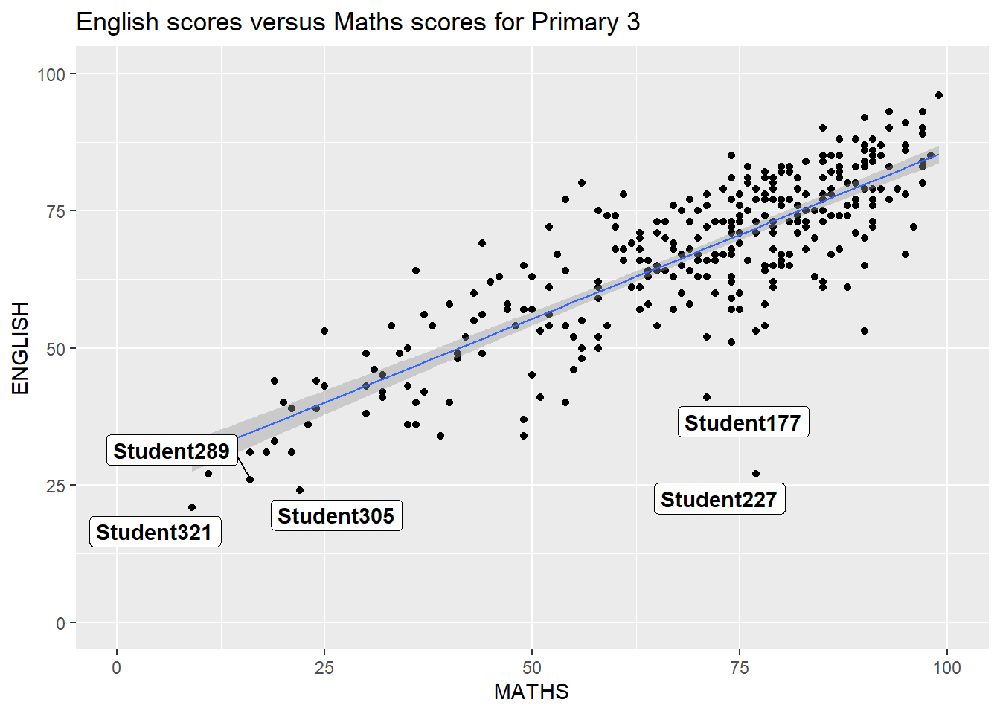
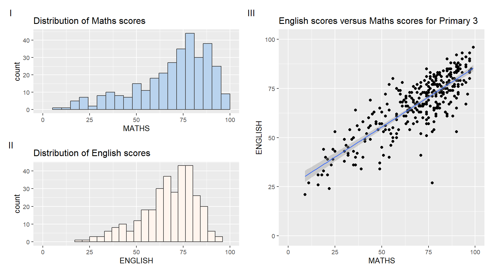

pacman::p_load(ggrepel, patchwork, ggthemes, hrbrthemes, tidyverse)Hands-on Exercise 2
Beyond ggplot2 fundamentals
Getting Started
Installing and loading the required libraries
In this hands-on exercise 2, four R packages in addition to tidyverse will be used. They are:
- ggrepel: provides geoms for ggplot2 to repel overlapping text labels
- ggthemes: provides extra themes, geoms and scales for ggplot2
- hrbrthemes: provides typography-centric themes and theme components for ggplot2
- patchwork: for the preparation of a composite figure created using ggplot2
The code chunk below will be used to check if these packages have been installed and to also load them into my working R environment:
Importing data
For this hands-on exercise, the data file Exam_data will be used. It consists of year end examination grades of a cohort of primary 3 students from a local school. It is in csv file format.
The code chunk below imports exam_data.csv into the R environment by using read_csv() function of readr package. readr is one of the tidyverse packages.
exam_data <- read_csv("data/Exam_data.csv")There are a total of seven attributes in the exam_data tibble data frame. Four of them are categorical data type and the other three are in continuous data type.
Taking a look at the head of the exam_data below:
head(exam_data,10)# A tibble: 10 × 7
ID CLASS GENDER RACE ENGLISH MATHS SCIENCE
<chr> <chr> <chr> <chr> <dbl> <dbl> <dbl>
1 Student321 3I Male Malay 21 9 15
2 Student305 3I Female Malay 24 22 16
3 Student289 3H Male Chinese 26 16 16
4 Student227 3F Male Chinese 27 77 31
5 Student318 3I Male Malay 27 11 25
6 Student306 3I Female Malay 31 16 16
7 Student313 3I Male Chinese 31 21 25
8 Student316 3I Male Malay 31 18 27
9 Student312 3I Male Malay 33 19 15
10 Student297 3H Male Indian 34 49 37the categorical data types are: ID, CLASS, GENDER, RACE
the continuous data types are: ENGLISH, MATHS, SCIENCE
Beyond ggplot2 annotation: ggrepel
One of the challenge in plotting statistical graph is annotation, especially with a large number of data points.

ggplot(data=exam_data,
aes(x= MATHS,
y=ENGLISH)) +
geom_point() +
geom_smooth(method=lm,
size=0.5) +
geom_label(aes(label = ID),
hjust = .5,
vjust = -.5) +
coord_cartesian(xlim=c(0,100),
ylim=c(0,100)) +
ggtitle("English scores versus Maths scores for Primary 3")ggrepel is an extension of ggplot2 package which provides geoms for ggplot2 to repel overlapping text as in the example above.
This is done by replacing geom_text() with geom_text_repel() andgeom_label()with geom_label_repel.
Working with ggrepel

ggplot(data=exam_data,
aes(x= MATHS,
y=ENGLISH)) +
geom_point() +
geom_smooth(method=lm,
size=0.5) +
geom_label_repel(aes(label = ID),
fontface = "bold") +
coord_cartesian(xlim=c(0,100),
ylim=c(0,100)) +
ggtitle("English scores versus Maths scores for Primary 3")Beyond ggplot2 themes
ggplot2 comes with eight built-in themes which are: theme_gray(), theme_bw(), theme_classic(), theme_dark(), theme_light(), theme_linedraw(), theme_minimal() and theme_void().
ggplot(data=exam_data,
aes(x= MATHS)) +
geom_histogram(bins=20,
boundary=100,
color="grey25",
fill="cadetblue2") +
theme_gray() +
ggtitle("English scores versus Maths scores for Primary 3")Refer to this link to learn more about ggplot2 themes.
Working with ggtheme package
ggthemesprovides ‘ggplot2’ themes that replicate the look of plots by Edward Tufte, Stephen Few, Fivethirtyeight, The Economist, ‘Stata’, ‘Excel’, and The Wall Street Journal, among others.
In the example below, The Economist theme is used.
ggplot(data=exam_data,
aes(x=MATHS)) +
geom_histogram(bins=20,
boundary=100,
color="grey25",
fill="darkseagreen2")+
ggtitle("Distribution of Maths scores") +
theme_economist()It also provides some extra geoms and scales for ‘ggplot2’. This website explains further.
Working with hrbrthemes package
hrbrthemes package provides a base theme that focuses on typographic elements, including where various labels are placed as well as the fonts that are used.
ggplot(data=exam_data,
aes(x=MATHS)) +
geom_histogram(bins=20,
boundary=100,
color="grey25",
fill="aquamarine2")+
ggtitle("Distribution of Maths scores") +
theme_ipsum()The second goal centers around productivity for a production workflow. In fact, this “production workflow” is the context for where the elements of hrbrthemes should be used. Consult this vignette to learn more.
ggplot(data=exam_data,
aes(x=MATHS)) +
geom_histogram(bins=20,
boundary=100,
color="grey25",
fill="skyblue1")+
ggtitle("Distribution of Maths scores") +
theme_ipsum(axis_title_size = 18,
base_size=15,
grid="Y")| What can we learn from the code chunk above? |
|---|
|
Beyond Single Graph
It is not unusual that multiple graphs are required to tell a compelling visual story. There are several ggplot2 extensions provide functions to compose figure with multiple graphs. In this section, we will create a composite plot by combining multiple graphs. First, we will create three statistical graphics by using the code chunk below.
p1 <- ggplot(data=exam_data,
aes(x=MATHS))+
geom_histogram(bins=20,
boundary=100,
color="grey25",
fill="slategray2")+
coord_cartesian(xlim=c(0,100))+
ggtitle("Distribution of Maths scores")+
theme(text = element_text(size = 10))Next plot
p2 <- ggplot(data=exam_data,
aes(x=ENGLISH))+
geom_histogram(bins=20,
boundary=100,
color="grey25",
fill="seashell")+
coord_cartesian(xlim=c(0,100))+
ggtitle("Distribution of English scores")+
theme(text = element_text(size = 10))Lastly, we will draw a scatterplot for English scores versus Maths scores, as shown below:
p3 <- ggplot(data=exam_data,
aes(x=MATHS,
y=ENGLISH))+
geom_point()+
geom_smooth(method=lm,
size=0.5)+
coord_cartesian(xlim=c(0,100),
ylim=c(0,100))+
ggtitle("English scores versus Maths scores for Primary 3")+
theme(text = element_text(size = 10))Creating Composite Graphics: pathwork methods
There are several ggplot2 extension functions that support the preparation of the composite figure by combining several graphs such as grid.arrange() of gridExtra package and plot_grid() of cowplot package. In this section, we will utilise a ggplot2 extension called patchwork which is specially designed for combining separate ggplot2 graphs into a single figure.
Patchwork package has a very simple syntax where layouts can be created easily. The general syntax comprises:
Two-Column Layout using the Plus Sign +.
Parenthesis () to create a subplot group.
Two-Row Layout using the Division Sign
/
Combining two ggplot2 graphs
The figure in the tabset below shows a composite of two histograms created using patchwork.
p1+p2Combining three ggplot2 graphs
We are able to plot more complex composite figures by using the appropriate operators. For instance, the composite figure below is plotted by using:
“|” operator places ggplot2 graphs in a row,
“/” operator stacks ggplot2 graphs into columns,
“()” operator allows the sequence of plotting to be defined.
(p1/p2)|p3This website, Plot Assembly, provides more details.
Creating a composite figure with tag
patchwork also provides auto-tagging capabilities to identify subplots in text format. An example is shown in the figure below.

((p1/p2)|p3) +
plot_annotation(tag_levels = 'I')Creating a figure with an insert
Beside providing functions to place plots next to each other based on the provided layout. The inset_element() function of patchwork allows the placement of one or several plots or graphic elements freely on top or below another plot. An example is shown below.
p3 + inset_element(p2,
left=0.02,
bottom=0.7,
right=0.5,
top=1)Creating a composite figure by using patchwork and ggtheme
The figure below is created using a combination of patchwork and theme_economist() of ggthemes discussed above.
patchwork <- (p1/p2)|p3
patchwork & theme_economist()patchwork <- (p1/p2)|p3
patchwork & theme_economist()